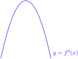
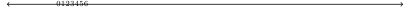

Section 6.11 Numerical Integration
By now the reader will have come to appreciate that integration is generally quite a bit more difficult than differentiation. There are a great many simple-looking integrals, such as \(\int e^{-x^2}\dee{x}\text{,}\) that are either very difficult or even impossible to express in terms of standard functions 1 . Such integrals are not merely mathematical curiosities, but arise very naturally in many contexts. For example, the error function
is extremely important in many areas of mathematics, and also in many practical applications of statistics.
In such applications we need to be able to evaluate this integral (and many others) at a given numerical value of \(x\text{.}\) In this section we turn to the problem of how to find (approximate) numerical values for integrals, without having to evaluate them algebraically. To develop these methods we return to Riemann sums and our geometric interpretation of the definite integral as the signed area.
We start by describing (and applying) three simple algorithms for generating, numerically, approximate values for the definite integral \(\int_a^b f(x)\,\dee{x}\text{.}\) In each algorithm, we begin in much the same way as we approached Riemann sums.
- We first select an integer \(n \gt 0\text{,}\) called the “number of steps”.
- We then divide the interval of integration, \(a\le x\le b\text{,}\) into \(n\) equal subintervals, each of length \(\De x=\frac{b-a}{n}\text{.}\) The first subinterval runs from \(x_0=a\) to \(x_1=a+\De x\text{.}\) The second runs from \(x_1\) to \(x_2=a+2\De x\text{,}\) and so on. The last runs from \(x_{n-1}=b-\De x\) to \(x_n=b\text{.}\)

This splits the original integral into \(n\) pieces:
Each subintegral \(\int_{x_{j-1}}^{x_j} f(x)\,\dee{x}\) is approximated by the area of a simple geometric figure. The three algorithms we consider approximate the area by rectangles, trapezoids and parabolas (respectively).

We will explain these rules in detail below, but we give a brief overview here:
- The midpoint rule approximates each subintegral by the area of a rectangle of height given by the value of the function at the midpoint of the subinterval\begin{align*} \int_{x_{j-1}}^{x_{j}} f(x) \dee{x} & \approx f\left( \frac{x_{j-1}+x_{j}}{2} \right) \De x \end{align*}This is illustrated in the leftmost figure above.
- The trapezoidal rule approximates each subintegral by the area of a trapezoid with vertices at \((x_{j-1},0), (x_{j-1},f(x_{j-1})), (x_{j},f(x_{j})), (x_{j},0)\text{:}\)\begin{align*} \int_{x_{j-1}}^{x_{j}} f(x) \dee{x} & \approx \frac{1}{2} \left[f(x_{j-1})+f(x_j) \right] \De x \end{align*}The trapezoid is illustrated in the middle figure above. We shall derive the formula for the area shortly.
- Simpson's rule approximates two adjacent subintegrals by the area under a parabola that passes through the points \((x_{j-1},f(x_{j-1}))\text{,}\) \((x_{j},f(x_{j}))\) and \((x_{j+1},f(x_{j+1}))\text{:}\)\begin{align*} \int_{x_{j-1}}^{x_{j+1}} f(x) \dee{x} & \approx \frac{1}{3} \left[f(x_{j-1})+4f(x_j)+f(x_{j+1}) \right] \De x \end{align*}The parabola is illustrated in the right hand figure above. We shall derive the formula for the area shortly.
Definition 6.11.1. Midpoints.
In what follows we need to refer to the midpoint between \(x_{j-1}\) and \(x_j\) very frequently. To save on writing (and typing) we introduce the notation
Subsection 6.11.1 The midpoint rule
The integral \(\int_{x_{j-1}}^{x_j} f(x)\,\dee{x}\) represents the area between the curve \(y=f(x)\) and the \(x\)-axis with \(x\) running from \(x_{j-1}\) to \(x_j\text{.}\) The width of this region is \(x_j-x_{j-1}=\De x\text{.}\) The height varies over the different values that \(f(x)\) takes as \(x\) runs from \(x_{j-1}\) to \(x_j\text{.}\)
The midpoint rule approximates this area by the area of a rectangle of width \(x_j-x_{j-1}=\De x\) and height \(f(\bar x_j)\) which is the exact height at the midpoint of the range covered by \(x\text{.}\)

The area of the approximating rectangle is \(f(\bar x_j)\De x\text{,}\) and the midpoint rule approximates each subintegral by
Applying this approximation to each subinterval and summing gives us the following approximation of the full integral:
So notice that the approximation is the sum of the function evaluated at the midpoint of each interval and then multiplied by \(\De x\text{.}\) Our other approximations will have similar forms.
In summary:
Equation 6.11.2. The midpoint rule.
The midpoint rule approximation is
where \(\De x = \tfrac{b-a}{n}\) and
Example 6.11.3. \(\int_0^1 \frac{4}{1+x^2}\,\dee{x}\).
We approximate the above integral using the midpoint rule with \(n=8\) step.
Solution:
- First we set up all the \(x\)-values that we will need. Note that \(a=0\text{,}\) \(b=1\text{,}\) \(\De x=\tfrac{1}{8}\) and\begin{align*} x_0&=0 & x_1&=\tfrac{1}{8} & x_2&=\tfrac{2}{8} && \cdots & x_7&=\tfrac{7}{8}& x_8&=\tfrac{8}{8}=1 \end{align*}Consequently\begin{align*} \bar x_1&= \tfrac{1}{16} & \bar x_2&= \tfrac{3}{16} & \bar x_3&= \tfrac{5}{16} & \cdots&& \bar x_8 &= \tfrac{15}{16} \end{align*}
- We now apply Equation 6.11.2 to the integrand \(f(x)=\frac{4}{1+x^2}\text{:}\)\begin{align*} &\int_0^1 \frac{4}{1+x^2}\,\dee{x} \approx \bigg[\overbrace{\frac{4}{1+\bar x_1^2}}^{f(\bar x_1)} +\overbrace{\frac{4}{1+\bar x_2^2}}^{f(\bar x_2)} +\!\cdots\! +\overbrace{\frac{4}{1+\bar x_7^2}}^{f(\bar x_{n-1})} +\overbrace{\frac{4}{1+\bar x_8^2}}^{f(\bar x_n)} \bigg]\De x\\ &=\bigg[\frac{4}{1+\tfrac{1}{16^2}}+ \frac{4}{1+\tfrac{3^2}{16^2}}+ \frac{4}{1+\tfrac{5^2}{16^2}}+ \frac{4}{1+\tfrac{7^2}{16^2}} +\frac{4}{1+\tfrac{9^2}{16^2}}\\ &\hskip2in +\frac{4}{1+\tfrac{11^2}{16^2}}+ \frac{4}{1+\tfrac{13^2}{16^2}}+ \frac{4}{1+\tfrac{15^2}{16^2}}\bigg]\frac{1}{8}\\ &=\big[ 3.98444 + 3.86415 + 3.64413 + 3.35738 + 3.03858 +\\ &\hskip2in 2.71618 + 2.40941 + 2.12890 \big]\frac{1}{8}\\ &= 3.1429 \end{align*}where we have rounded to four decimal places.
- In this case we can compute the integral exactly (which is one of the reasons it was chosen as a first example):\begin{gather*} \int_0^1\frac{4}{1+x^2}\dee{x} =4\arctan x\Big|_0^1 = \pi \end{gather*}
- So the error in the approximation generated by eight steps of the midpoint rule is\begin{align*} |3.1429-\pi| &=0.0013 \end{align*}
- The relative error is then\begin{align*} \frac{|\text{approximate}-\text{exact}|}{\text{exact}} &= \frac{|3.1429-\pi|}{\pi}=0.0004 \end{align*}That is the error is \(0.0004\) times the actual value of the integral.
- We can write this as a percentage error by multiplying it by 100\begin{align*} \text{percentage error} &= 100 \times \frac{|\text{approximate}-\text{exact}|}{\text{exact}} = 0.04 \% \end{align*}That is, the error is about \(0.04\%\) of the exact value.
The midpoint rule gives us quite good estimates of the integral without too much work — though it is perhaps a little tedious to do by hand 2 . Of course, it would be very helpful to quantify what we mean by “good” in this context and that requires us to discuss errors.
Definition 6.11.4.
Suppose that \(\alpha\) is an approximation to \(A\text{.}\) This approximation has
- absolute error \(|A-\alpha|\) and
- relative error \(\frac{|A-\alpha|}{A}\) and
- percentage error \(100\frac{|A-\alpha|}{A}\)
We will discuss errors further in Section 6.11.4 below.
Example 6.11.5. \(\int_0^\pi\sin x\,\dee{x}\).
As a second example, we apply the midpoint rule with \(n=8\) steps to the above integral.
- We again start by setting up all the \(x\)-values that we will need. So \(a=0\text{,}\) \(b=\pi\text{,}\) \(\De x=\tfrac{\pi}{8}\) and\begin{align*} x_0&=0& x_1&=\tfrac{\pi}{8}& x_2&=\tfrac{2\pi}{8}& \cdots&& x_7&=\tfrac{7\pi}{8}& x_8&=\tfrac{8\pi}{8}=\pi \end{align*}Consequently,\begin{align*} \bar x_1&=\tfrac{\pi}{16}& \bar x_2&=\tfrac{3\pi}{16} & \cdots&& \bar x_7&=\tfrac{13\pi}{16} & \bar x_8&=\tfrac{15\pi}{16} \end{align*}
- Now apply Equation 6.11.2 to the integrand \(f(x)=\sin x\text{:}\)\begin{align*} &\int_0^\pi\sin x\,\dee{x} \approx\Big[\sin(\bar x_1)+\sin(\bar x_2)+\cdots+\sin(\bar x_8)\Big]\De x\\ &=\Big[\sin(\tfrac{\pi}{16})+ \sin(\tfrac{3\pi}{16})+ \sin(\tfrac{5\pi}{16})+ \sin(\tfrac{7\pi}{16})+ \sin(\tfrac{9\pi}{16})+\\ &\hskip2in \sin(\tfrac{11\pi}{16})+ \sin(\tfrac{13\pi}{16})+ \sin(\tfrac{15\pi}{16})\Big]\tfrac{\pi}{8}\\ &=\Big[0.1951+ 0.5556+ 0.8315+ 0.9808+ 0.9808+\\ &\hskip2in 0.8315+ 0.5556+ 0.1951\Big]\times 0.3927\\ &=5.1260\times 0.3927 =2.013 \end{align*}
- Again, we have chosen this example so that we can compare it against the exact value:\begin{align*} \int_0^\pi \sin x \dee{x} &= \big[ -\cos x \big]_0^\pi = -\cos\pi + \cos 0 = 2. \end{align*}
- So with eight steps of the midpoint rule we achieved\begin{align*} \text{absolute error} &= |2.013-2|=0.013\\ \text{relative error} &= \frac{|2.013-2|}{2} = 0.0065\\ \text{percentage error} &= 100 \times \frac{|2.013-2|}{2} = 0.65 \% \end{align*}With little work we have managed to estimate the integral to within \(1\%\) of its true value.
Subsection 6.11.2 The trapezoidal rule
Consider again the area represented by the integral \(\int_{x_{j-1}}^{x_j} f(x)\,\dee{x}\text{.}\) The trapezoidal rule 3 (unsurprisingly) approximates this area by a trapezoid 4 whose vertices lie at

The trapezoidal approximation of the integral \(\int_{x_{j-1}}^{x_j} f(x)\,\dee{x}\) is the shaded region in the figure on the right above. It has width \(x_j-x_{j-1}=\De x\text{.}\) Its left hand side has height \(f(x_{j-1})\) and its right hand side has height \(f(x_j)\text{.}\)
As the figure below shows, the area of a trapezoid is its width times its average height.

So the trapezoidal rule approximates each subintegral by
Applying this approximation to each subinterval and then summing the result gives us the following approximation of the full integral
So notice that the approximation has a very similar form to the midpoint rule, excepting that
- we evaluate the function at the \(x_j\)'s rather than at the midpoints, and
- we multiply the value of the function at the endpoints \(x_0,x_n\) by \(\frac12\text{.}\)
In summary:
Equation 6.11.6. The trapezoidal rule.
The trapezoidal rule approximation is
where
To compare and contrast we apply the trapezoidal rule to the examples we did above with the midpoint rule.
Example 6.11.7. \(\int_0^1 \frac{4}{1+x^2}\,\dee{x}\) — using the trapezoidal rule.
Solution: We proceed very similarly to Example 6.11.3 and again use \(n=8\) steps.
- We again have \(f(x)=\frac{4}{1+x^2}\text{,}\) \(a=0\text{,}\) \(b=1\text{,}\) \(\De x=\tfrac{1}{8}\) and\begin{align*} x_0&=0 & x_1&=\tfrac{1}{8} & x_2&=\tfrac{2}{8} && \cdots & x_7&=\tfrac{7}{8}& x_8&=\tfrac{8}{8}=1 \end{align*}
- Applying the trapezoidal rule, Equation 6.11.6, gives\begin{align*} &\int_0^1 \frac{4}{1+x^2}\,\dee{x} \approx \bigg[\frac{1}{2}\overbrace{\frac{4}{1\!+\!x_0^2}}^{f(x_0)} +\overbrace{\frac{4}{1\!+\!x_1^2}}^{f(x_1)} +\!\cdots\! +\overbrace{\frac{4}{1\!+\!x_7^2}}^{f(x_{n-1})} +\frac{1}{2}\overbrace{\frac{4}{1\!+\!x_8^2}}^{f(x_n)} \bigg]\De x\\ &\hskip0.25in=\bigg[\frac{1}{2}\frac{4}{1+0^2}+ \frac{4}{1+\tfrac{1}{8^2}}+ \frac{4}{1+\tfrac{2^2}{8^2}}+ \frac{4}{1+\tfrac{3^2}{8^2}}\\ &\hskip0.5in +\frac{4}{1+\tfrac{4^2}{8^2}}+ \frac{4}{1+\tfrac{5^2}{8^2}}+ \frac{4}{1+\tfrac{6^2}{8^2}}+ \frac{4}{1+\tfrac{7^2}{8^2}}+ \frac{1}{2}\frac{4}{1+\tfrac{8^2}{8^2}}\bigg]\frac{1}{8}\\ &\hskip0.25in=\Big[\frac{1}{2}\times 4+ 3.939+ 3.765+ 3.507\\ &\hskip0.5in +3.2+ 2.876+ 2.56+ 2.266+ \frac{1}{2}\times 2\Big]\frac{1}{8}\\ &\hskip0.25in =3.139 \end{align*}to three decimal places.
- The exact value of the integral is still \(\pi\text{.}\) So the error in the approximation generated by eight steps of the trapezoidal rule is \(|3.139-\pi|=0.0026\text{,}\) which is \(100\tfrac{|3.139-\pi|}{\pi}\% =0.08\%\) of the exact answer. Notice that this is roughly twice the error that we achieved using the midpoint rule in Example 6.11.3.
Let us also redo Example 6.11.5 using the trapezoidal rule.
Example 6.11.8. \(\int_0^\pi\sin x\,\dee{x}\) — using the trapezoidal rule.
Solution: We proceed very similarly to Example 6.11.5 and again use \(n=8\) steps.
- We again have \(a=0\text{,}\) \(b=\pi\text{,}\) \(\De x=\tfrac{\pi}{8}\) and\begin{align*} x_0&=0& x_1&=\tfrac{\pi}{8}& x_2&=\tfrac{2\pi}{8}& \cdots&& x_7&=\tfrac{7\pi}{8}& x_8&=\tfrac{8\pi}{8}=\pi \end{align*}
- Applying the trapezoidal rule, Equation 6.11.6, gives\begin{align*} &\int_0^\pi\sin x\,\dee{x} \approx \Big[\half\sin(x_0)+\sin(x_1)+\cdots+\sin(x_7)+\half\sin(x_8)\Big]\De x\\ &=\Big[\half\sin0 + \sin\tfrac{\pi}{8}+ \sin\tfrac{2\pi}{8}+ \sin\tfrac{3\pi}{8}+ \sin\tfrac{4\pi}{8}+ \sin\tfrac{5\pi}{8}\\ &\hskip0.5in+\sin\tfrac{6\pi}{8}+ \sin\tfrac{7\pi}{8}+ \half\sin\tfrac{8\pi}{8}\Big]\tfrac{\pi}{8}\\ &=\Big[\half\!\times\! 0+ 0.3827+ 0.7071+ 0.9239+ 1.0000+ 0.9239+\\ &\hskip0.5in 0.7071+ 0.3827+ \half\!\times\! 0\Big]\times 0.3927\\ &=5.0274\times 0.3927 =1.974 \end{align*}
- The exact answer is \(\int_0^\pi\sin x\,\dee{x}=-\cos x\Big|_0^\pi=2\text{.}\) So with eight steps of the trapezoidal rule we achieved \(100\tfrac{|1.974-2|}{2}=1.3\%\) accuracy. Again this is approximately twice the error we achieved in Example 6.11.5 using the midpoint rule.
These two examples suggest that the midpoint rule is more accurate than the trapezoidal rule. Indeed, this observation is born out by a rigorous analysis of the error — see Section 6.11.4.
Subsection 6.11.3 Simpson's Rule
When we use the trapezoidal rule we approximate the area \(\int_{x_{j-1}}^{x_j}f(x)\dee{x}\) by the area between the \(x\)-axis and a straight line that runs from \((x_{j-1},f(x_{j-1}))\) to \((x_j, f(x_j))\) — that is, we approximate the function \(f(x)\) on this interval by a linear function that agrees with the function at each endpoint. An obvious way to extend this — just as we did when extending linear approximations to quadratic approximations in our differential calculus course — is to approximate the function with a quadratic. This is precisely what Simpson's 5 rule does.
Simpson's rule approximates the integral over two neighbouring subintervals by the area between a parabola and the \(x\)-axis. In order to describe this parabola we need 3 distinct points (which is why we approximate two subintegrals at a time). That is, we approximate
by the area bounded by the parabola that passes through the three points \(\big(x_0,f(x_0)\big)\text{,}\) \(\big(x_1,f(x_1)\big)\) and \(\big(x_2,f(x_2)\big)\text{,}\) the \(x\)-axis and the vertical lines \(x=x_0\) and \(x=x_2\text{.}\)

We repeat this on the next pair of subintervals and approximate \(\int_{x_2}^{x_4} f(x)\,\dee{x}\) by the area between the \(x\)-axis and the part of a parabola with \(x_2\le x\le x_4\text{.}\) This parabola passes through the three points \(\big(x_2,f(x_2)\big)\text{,}\) \(\big(x_3,f(x_3)\big)\) and \(\big(x_4,f(x_4)\big)\text{.}\) And so on. Because Simpson's rule does the approximation two slices at a time, \(n\) must be even.
To derive Simpson's rule formula, we first find the equation of the parabola that passes through the three points \(\big(x_0,f(x_0)\big)\text{,}\) \(\big(x_1,f(x_1)\big)\) and \(\big(x_2,f(x_2)\big)\text{.}\) Then we find the area between the \(x\)-axis and the part of that parabola with \(x_0\le x\le x_2\text{.}\) To simplify this computation consider a parabola passing through the points \((-h,y_{-1}), (0,y_0)\) and \((h,y_1)\text{.}\)
Write the equation of the parabola as
Then the area between it and the \(x\)-axis with \(x\) running from \(-h\) to \(h\) is
Now, the the three points \((-h,y_{-1}), (0,y_0)\) and \((h,y_1)\) lie on this parabola if and only if
Adding the first and third equations together gives us
To this we add four times the middle equation
This means that
Note that here
- \(h\) is one half of the length of the \(x\)-interval under consideration
- \(y_{-1}\) is the height of the parabola at the left hand end of the interval under consideration
- \(y_0\) is the height of the parabola at the middle point of the interval under consideration
- \(y_{1}\) is the height of the parabola at the right hand end of the interval under consideration
So Simpson's rule approximates
and
and so on. Summing these all together gives:
In summary
Equation 6.11.9. Simpson's rule.
The Simpson's rule approximation is
where \(n\) is even and
Notice that Simpson's rule requires essentially no more work than the trapezoidal rule. In both rules we must evaluate \(f(x)\) at \(x=x_0,x_1,\cdots,x_n\text{,}\) but we add those terms multiplied by different constants 6 .
Let's put it to work on our two running examples.
Example 6.11.10. \(\int_0^1 \frac{4}{1+x^2}\,\dee{x}\) — using Simpson's rule.
Solution: We proceed almost identically to Example 6.11.7 and again use \(n=8\) steps.
- We have the same \(\De,a,b,x_0,\cdots, x_n\) as Example 6.11.7.
- Applying Equation 6.11.9 gives\begin{align*} &\int_0^1 \frac{4}{1+x^2}\,\dee{x}\\ &\approx \bigg[\frac{4}{1+0^2}+ 4\frac{4}{1+\tfrac{1}{8^2}}+ 2\frac{4}{1+\tfrac{2^2}{8^2}}+ 4\frac{4}{1+\tfrac{3^2}{8^2}}+ 2\frac{4}{1+\tfrac{4^2}{8^2}}\\ &\hskip0.5in +4\frac{4}{1+\tfrac{5^2}{8^2}}+ 2\frac{4}{1+\tfrac{6^2}{8^2}}+ 4\frac{4}{1+\tfrac{7^2}{8^2}}+ \frac{4}{1+\tfrac{8^2}{8^2}}\bigg]\frac{1}{8\times 3}\\ &=\Big[ 4\!+\! 4\times 3.938461538 \!+\! 2\times 3.764705882 \!+\! 4\times 3.506849315 \!+\! 2\times 3.2 \\ &\hskip0.5in +4\times 2.876404494 + 2\times 2.56 + 4\times 2.265486726 + 2\Big]\frac{1}{8\times 3}\\ &=3.14159250 \end{align*}to eight decimal places.
- This agrees with \(\pi\) (the exact value of the integral) to six decimal places. So the error in the approximation generated by eight steps of Simpson's rule is \(|3.14159250-\pi|=1.5\times 10^{-7}\text{,}\) which is \(100\tfrac{|3.14159250-\pi|}{\pi}\% =5\times 10^{-6}\%\) of the exact answer.
It is striking that the absolute error approximating with Simpson's rule is so much smaller than the error from the midpoint and trapezoidal rules.
Buoyed by this success, we will also redo Example 6.11.8 using Simpson's rule.
Example 6.11.11. \(\int_0^\pi\sin x\,\dee{x}\) — Simpson's rule.
Solution: We proceed almost identically to Example 6.11.8 and again use \(n=8\) steps.
- We have the same \(\De,a,b,x_0,\cdots, x_n\) as Example 6.11.7.
- Applying Equation 6.11.9 gives\begin{align*} &\int_0^\pi\sin x\,\dee{x}\\ &\hskip0.5in\approx \Big[\sin(x_0)+4\sin(x_1)+2\sin(x_2)+\cdots+4\sin(x_7)+\sin(x_8)\Big]\tfrac{\De x}{3}\\ &\hskip0.5in=\Big[\sin(0)+ 4\sin(\tfrac{\pi}{8})+ 2\sin(\tfrac{2\pi}{8})+ 4\sin(\tfrac{3\pi}{8})+ 2\sin(\tfrac{4\pi}{8})\cr &\hskip0.5in\phantom{=\Big[\sin(0)\,} +4\sin(\tfrac{5\pi}{8})+ 2\sin(\tfrac{6\pi}{8})+ 4\sin(\tfrac{7\pi}{8})+ \sin(\tfrac{8\pi}{8})\Big]\tfrac{\pi}{8\times 3}\cr &=\hskip0.5in\Big[ 0+ 4\times 0.382683+ 2\times 0.707107+ 4\times 0.923880+ 2\times 1.0\\ &\hskip0.5in\phantom{=\Big[ 0\,}+ 4\times 0.923880+ 2\times 0.707107+ 4\times 0.382683+0\Big]\tfrac{\pi}{8\times 3}\\ &\hskip0.5in=15.280932\times 0.130900\\ &\hskip0.5in=2.00027 \end{align*}
- With only eight steps of Simpson's rule we achieved \(100\tfrac{2.00027-2}{2}=0.014\%\) accuracy.
Again we contrast the error we achieved with the other two rules:
This completes our derivation of the midpoint, trapezoidal and Simpson's rules for approximating the values of definite integrals. So far we have not attempted to see how efficient and how accurate the algorithms are in general. That's our next task.
Subsection 6.11.4 Three Simple Numerical Integrators — Error Behaviour
Now we are armed with our three (relatively simple) method for numerical integration we should give thought to how practical they might be in the real world 7 . Two obvious considerations when deciding whether or not a given algorithm is of any practical value are
- the amount of computational effort required to execute the algorithm and
- the accuracy that this computational effort yields.
For algorithms like our simple integrators, the bulk of the computational effort usually goes into evaluating the function \(f(x)\text{.}\) The number of evaluations of \(f(x)\) required for \(n\) steps of the midpoint rule is \(n\text{,}\) while the number required for \(n\) steps of the trapezoidal and Simpson's rules is \(n+1\text{.}\) So all three of our rules require essentially the same amount of effort — one evaluation of \(f(x)\) per step.
To get a first impression of the error behaviour of these methods, we apply them to a problem whose answer we know exactly:
To be a little more precise, we would like to understand how the errors of the three methods change as we increase the effort we put in (as measured by the number of steps \(n\)). The following table lists the error in the approximate value for this number generated by our three rules applied with three different choices of \(n\text{.}\) It also lists the number of evaluations of \(f\) required to compute the approximation.
| Midpoint | Trapezoidal | Simpson's | ||||
| n | error | # evals | error | # evals | error | # evals |
| 10 | \(4.1\times 10^{-1}\) | 10 | \(8.2\times 10^{-1}\) | 11 | \(5.5\times 10^{-3}\) | 11 |
| 100 | \(4.1\times 10^{-3}\) | 100 | \(8.2\times 10^{-3}\) | 101 | \(5.4\times 10^{-7}\) | 101 |
| 1000 | \(4.1\times 10^{-5}\) | 1000 | \(8.2\times 10^{-5}\) | 1001 | \(5.5\times 10^{-11}\) | 1001 |
Observe that
- Using 101 evaluations of \(f\) worth of Simpson's rule gives an error 80 times smaller than 1000 evaluations of \(f\) worth of the midpoint rule.
- The trapezoidal rule error with \(n\) steps is about twice the midpoint rule error with \(n\) steps.
- With the midpoint rule, increasing the number of steps by a factor of 10 appears to reduce the error by about a factor of \(100=10^2=n^2\text{.}\)
- With the trapezoidal rule, increasing the number of steps by a factor of 10 appears to reduce the error by about a factor of \(10^2=n^2\text{.}\)
- With Simpson's rule, increasing the number of steps by a factor of 10 appears to reduce the error by about a factor of \(10^4=n^4\text{.}\)
So it looks like
with some constants \(K_M,\ K_T\) and \(K_S\text{.}\) It also seems that \(K_T\approx 2 K_M\text{.}\)


To test these conjectures for the behaviour of the errors we apply our three rules with about ten different choices of \(n\) of the form \(n=2^m \) with \(m\) integer. Figure 6.11.12 contains two graphs of the results. The left-hand plot shows the results for the midpoint and trapezoidal rules and the right-hand plot shows the results for Simpson's rule.
For each rule we are expecting (based on our conjectures above) that the error
with \(n\) steps is (roughly) of the form
for some constants \(K\) and \(k\text{.}\) We would like to test if this is really the case, by graphing \(Y=e_n\) against \(X=n\) and seeing if the graph “looks right”. But it is not easy to tell whether or not a given curve really is \(Y=\frac{K}{X^k}\text{,}\) for some specific \(k\text{,}\) by just looking at it. However, your eye is pretty good at determining whether or not a graph is a straight line. Fortunately, there is a little trick that turns the curve \(Y=\tfrac{K}{X^k}\) into a straight line — no matter what \(k\) is.
Instead of plotting \(Y\) against \(X\text{,}\) we plot \(\log Y\) against \(\log X\text{.}\) This transformation 8 works because when \(Y=\frac{K}{X^k}\)
So plotting \(y=\log Y\) against \(x=\log X\) gives the straight line \(y=\log K -kx\text{,}\) which has slope \(-k\) and \(y\)-intercept \(\log K\text{.}\)
The three graphs in Figure 6.11.12 plot \(y=\log_2 e_n\) against \(x=\log_2 n\) for our three rules. Note that we have chosen to use logarithms 9 with this “unusual base” because it makes it very clear how much the error is improved if we double the number of steps used. To be more precise — one unit step along the \(x\)-axis represents changing \(n \mapsto 2n\text{.}\) For example, applying Simpson's rule with \(n=2^4\) steps results in an error of \(0000166\text{,}\) so the point \((x=\log_2 2^4=4, y=\log_2 0000166 = \frac{\log 0000166}{\log 2} = -15.8)\) has been included on the graph. Doubling the effort used — that is, doubling the number of steps to \(n=2^5\)— results in an error of \(0.00000103\text{.}\) So, the data point \((x=\log_2 2^5=5\ ,\ y=\log_2 0.00000103 =\frac{\ln 0.00000103}{\ln 2}=-19.9)\) lies on the graph. Note that the \(x\)-coordinates of these points differ by 1 unit.
For each of the three sets of data points, a straight line has also been plotted “through” the data points. A procedure called linear regression 10 has been used to decide precisely which straight line to plot. It provides a formula for the slope and \(y\)-intercept of the straight line which “best fits” any given set of data points. From the three lines, it sure looks like \(k=2\) for the midpoint and trapezoidal rules and \(k=4\) for Simpson's rule. It also looks like the ratio between the value of \(K\) for the trapezoidal rule, namely \(K=2^{0.7253}\text{,}\) and the value of \(K\) for the midpoint rule, namely \(K=2^{-0.2706}\text{,}\) is pretty close to 2: \(2^{0.7253}/2^{-0.2706}=2^{0.9959}\text{.}\)
The intuition, about the error behaviour, that we have just developed is in fact correct — provided the integrand \(f(x)\) is reasonably smooth. To be more precise
Theorem 6.11.13. Numerical integration errors.
Assume that \(|f''(x)| \leq M\) for all \(a\leq x \leq b\text{.}\) Then
when approximating \(\ds \int_a^b f(x)\dee{x}\text{.}\) Further, if \(|f^{(4)}(x)|\leq L\) for all \(a\leq x \leq b\text{,}\) then
\begin{align*} &\text{the total error introduced by Simpson's rule is bounded by } & \frac{L}{180} \frac{(b-a)^5}{n^4}. \end{align*}The first of these error bounds in proven in the following (optional) section. Here are some examples which illustrate how they are used. First let us check that the above result is consistent with our data in Figure 6.11.12
Example 6.11.14. Midpoint rule error approximating \(\int_0^\pi \sin x\,\dee{x}\).
- The integral \(\int_0^\pi \sin x\,\dee{x}\) has \(b-a=\pi\text{.}\)
- The second derivative of the integrand satisfies\begin{align*} \left|\ddiff{2}{}{x}\sin x\right| &= |-\sin x| \leq 1 \end{align*}So we take \(M=1\text{.}\)
- So the error, \(e_n\text{,}\) introduced when \(n\) steps are used is bounded by\begin{align*} |e_n|&\le\frac{M}{24}\frac{(b-a)^3}{n^2}\\ &=\frac{\pi^3}{24}\frac{1}{n^2}\\ &\approx 1.29\frac{1}{n^2} \end{align*}
- The data in the graph in Figure 6.11.12 gives\begin{align*} |e_n| &\approx 2^{-.2706}\frac{1}{n^2}=0.83\frac{1}{n^2} \end{align*}which is consistent with the bound \(|e_n|\le \frac{\pi^3}{24}\frac{1}{n^2}\text{.}\)
In a typical application we would be asked to evaluate a given integral to some specified accuracy. For example, if you are manufacturer and your machinery can only cut materials to an accuracy of \({\tfrac{1}{10}}^{\rm th}\) of a millimeter, there is no point in making design specifications more accurate than \({\tfrac{1}{10}}^{\rm th}\) of a millimeter.
Example 6.11.15. How many steps for a given accuracy?
Suppose, for example, that we wish to use the midpoint rule to evaluate 11
to within an accuracy of \(10^{-6}\text{.}\)
Solution:
- The integral has \(a=0\) and \(b=1\text{.}\)
- The first two derivatives of the integrand are\begin{align*} \diff{}{x}e^{-x^2}&=-2xe^{-x^2} \hskip2in \text{and}\\ \ddiff{2}{}{x}e^{-x^2} &=\diff{}{x}\big(-2xe^{-x^2}\big) =-2e^{-x^2}+4x^2e^{-x^2}=2(2x^2-1)e^{-x^2} \end{align*}
- As \(x\) runs from 0 to 1, \(2x^2-1\) increases from \(-1\) to \(1\text{,}\) so that\begin{gather*} 0\le x\le 1\implies |2x^2-1|\le 1,\ e^{-x^2}\le 1\implies \big|2(2x^2-1)e^{-x^2}\big|\le 2 \end{gather*}So we take \(M=2\text{.}\)
- The error introduced by the \(n\) step midpoint rule is at most\begin{align*} e_n & \leq \frac{M}{24}\frac{(b-a)^3}{n^2}\\ &\leq \frac{2}{24}\frac{(1-0)^3}{n^2} = \frac{1}{12n^2} \end{align*}
- We need this error to be smaller than \(10^{-6}\) so\begin{align*} e_n & \leq \frac{1}{12n^2} \leq 10^{-6} & \text{and so }\\ 12n^2 &\geq 10^6 & \text{clean up}\\ n^2 &\geq \frac{10^6}{12} = 83333.3 & \text{square root both sides}\\ n &\geq 288.7 \end{align*}So \(289\) steps of the midpoint rule will do the job.
- In fact \(n=289\) results in an error of about \(3.7\times 10^{-7}\text{.}\)
That seems like far too much work, and the trapezoidal rule will have twice the error. So we should look at Simpson's rule.
Example 6.11.16. How many steps using Simpson's rule?
Suppose now that we wish evaluate \(\int_0^1 e^{-x^2}\,\dee{x}\) to within an accuracy of \(10^{-6}\) — but now using Simpson's rule. How many steps should we use?
Solution:
- Again we have \(a=0,b=1\text{.}\)
- We then need to bound \(\ddiff{4}{}{x}e^{-x^2}\) on the domain of integration, \(0\leq x\leq 1\text{.}\)\begin{align*} \ddiff{3}{}{x}e^{-x^2} &=\diff{}{x}\big\{2(2x^2-1)e^{-x^2}\big\} =8xe^{-x^2}-4x(2x^2-1)e^{-x^2}\\ &=4(-2x^3+3x)e^{-x^2}\\ \ddiff{4}{}{x}e^{-x^2} &=\diff{}{x}\big\{4(-2x^3+3x)e^{-x^2}\big\}\\ &=4(-6x^2+3)e^{-x^2}\hskip-4pt-8x(-2x^3+3x)e^{-x^2}\\ &=4(4x^4-12x^2+3)e^{-x^2} \end{align*}
- Now, for any \(x\text{,}\) \(e^{-x^2}\le 1\text{.}\) Also, for \(0\le x\le 1\text{,}\)\begin{align*} 0 & \leq x^2, x^4 \leq 1 & \text{ so}\\ 3 & \leq 4x^4+3 \leq 7 & \text{ and }\\ -12 & \leq -12x^2 \leq 0 & \text{adding these together gives}\\ -9 & \leq 4x^4-12x^2 + 3 \leq 7 \end{align*}Consequently, \(|4x^4-12x^2+3|\) is bounded by \(9\) and so\begin{gather*} \left|\ddiff{4}{}{x}e^{-x^2}\right| \leq 4\times 9=36 \end{gather*}So take \(L=36\text{.}\)
- The error introduced by the \(n\) step Simpson's rule is at most\begin{align*} e_n & \leq \frac{L}{180}\frac{(b-a)^5}{n^4}\\ & \leq \frac{36}{180} \frac{(1-0)^5}{n^4} = \frac{1}{5n^4} \end{align*}
- In order for this error to be no more than \(10^{-6}\) we require \(n\) to satisfy\begin{align*} e_n &\leq \frac{1}{5n^4} \leq 10^{-6} & \text{and so}\\ 5n^4 & \geq 10^6\\ n^4 &\geq 200000 & \text{take fourth root}\\ n & \geq 21.15 \end{align*}So \(22\) steps of Simpson's rule will do the job.
- \(n=22\) steps actually results in an error of \(3.5\times 10^{-8}\text{.}\) The reason that we get an error so much smaller than we need is that we have overestimated the number of steps required. This, in turn, occurred because we made quite a rough bound of \(\left|\ddiff{4}{}{x}f(x)\right|\leq 36\text{.}\) If we are more careful then we will get a slightly smaller \(n\text{.}\) It actually turns out 12 that you only need \(n=10\) to approximate within \(10^{-6}\text{.}\)
Subsection 6.11.5 Optional — An error bound for the midpoint rule
We now try develop some understanding as to why we got the above experimental results. We start with the error generated by a single step of the midpoint rule. That is, the error introduced by the approximation
To do this we are going to need to apply integration by parts in a sneaky way. Let us start by considering 13 a subinterval \(\alpha \leq x \leq \beta\) and let's call the width of the subinterval \(2q\) so that \(\beta=\alpha+2q\text{.}\) If we were to now apply the midpoint rule to this subinterval, then we would write
since the interval has width \(2q\) and the midpoint is \(\alpha+q=\beta-q\text{.}\)
The sneaky trick we will employ is to write
and then examine each of the integrals on the right-hand side (using integration by parts) and show that they are each of the form
Let us apply integration by parts to \(\int_\alpha^{\alpha+q} f(x)\dee{x}\) — with \(u=f(x), \dee{v}=\dee{x}\) so \(\dee{u}=f'(x)\dee{x}\) and we will make the slightly non-standard choice of \(v=x-\alpha\text{:}\)
Notice that the first term on the right-hand side is the term we need, and that our non-standard choice of \(v\) allowed us to avoid introducing an \(f(\alpha)\) term.
Now integrate by parts again using \(u=f'(x), \dee{v}=(x-\alpha)\dee{x}\text{,}\) so \(\dee{u}=f''(x), v = \frac{(x-\alpha)^2}{2}\text{:}\)
To obtain a similar expression for the other integral, we repeat the above steps and obtain:
Now add together these two expressions
Then since \(\alpha+q=\beta-q\) we can combine the integrals on the left-hand side and eliminate some terms from the right-hand side:
\begin{align*} \int_\alpha^\beta f(x)\dee{x} &= 2q f(\alpha+q) + \int_\alpha^{\alpha+q} \frac{(x-\alpha)^2}{2}f''(x)\dee{x} + \int_{\beta-q}^\beta \frac{(x-\beta)^2}{2}f''(x)\dee{x} \end{align*}Rearrange this expression a little and take absolute values
where we have also made use of the triangle inequality 14 . By assumption \(|f''(x)| \leq M\) on the interval \(\alpha \leq x \leq \beta\text{,}\) so
where we have used \(q = \frac{\beta-\alpha}{2}\) in the last step.
Thus on any interval \(x_i \leq x \leq x_{i+1}=x_i+\De x\)
Putting everything together we see that the error using the midpoint rule is bounded by
as required.
A very similar analysis shows that, as was stated in Theorem 6.11.13 above,
- the total error introduced by the trapezoidal rule is bounded by \(\ds \frac{M}{12}\frac{(b-a)^3}{n^2}\text{,}\)
- the total error introduced by Simpson's rule is bounded by \(\ds \frac{M}{180}\frac{(b-a)^5}{n^4}\)
Exercises 6.11.6 Exercises
Recall that we are using \(\log x\) to denote the logarithm of \(x\) with base \(e\text{.}\) In other courses it is often denoted \(\ln x\text{.}\)
1.
Suppose we approximate an object to have volume \(1.5 \mathrm{m}^3\text{,}\) when its exact volume is \(1.387 \mathrm{m}^3\text{.}\) Give the relative error, absolute error, and percent error of our approximation.
The absolute error is the difference of the two values; the relative error is the absolute error divided by the exact value; the percent error is one hundred times the relative error.
Relative error: \(\approx 0.08147\text{;}\) absolute error: \(0.113\text{;}\) percent error: \(\approx 8.147\%\text{.}\)
The absolute error is the difference between the two values:
The relative error is the absolute error divided by the exact value:
The percent error is 100 times the relative error:
2.
Consider approximating \(\displaystyle\int_2^{10} f(x) \dee{x}\text{,}\) where \(f(x)\) is the function in the graph below.
- Draw the rectangles associated with the midpoint rule approximation and \(n=4\text{.}\)
- Draw the trapezoids associated with the trapezoidal rule approximation and \(n=4\text{.}\)
You don't have to give an approximation.

3.
Let \(f(x) = -\dfrac{1}{12}x^4+\dfrac{7}{6}x^3-3x^2\text{.}\)
- Find a reasonable value \(M\) such that \(|f''(x)| \leq M\) for all \(1 \leq x \leq 6\text{.}\)
- Find a reasonable value \(L\) such that \(|f^{(4)}(x)| \leq L\) for all \(1 \leq x \leq 6\text{.}\)
Sketch the second derivative--it's quadratic.
\(M=6.25\text{,}\) \(L=2\)
-
Differentiating, we find \(f''(x) = -x^2+7x-6\text{.}\) Since \(f''(x)\) is quadratic, we have a pretty good idea of what it looks like.
- It factors as \(f(x) = -(x-6)(x-1)\text{,}\) so its two roots are at \(x=6\) and \(x=1\text{.}\)
- The “flat part” of the parabola is at \(x=3.5\) (since this is exactly half way between \(x=1\) and \(x=6\text{;}\) alternately, we can check that \(f'''(3.5)=0\)).
- Since the coefficient of \(x^2\) is negative, \(f(x)\) is increasing from \(-\infty\) to \(3.5\text{,}\) then decreasing from \(3.5\) to \(\infty\text{.}\)
Therefore, over the interval \([1,6]\text{,}\) the largest positive value of \(f''(x)\) occurs when \(x=3.5\text{,}\) and this is \(f''(3.5) = -(3.5-6)(3.5-1)=6.25\text{.}\)
So, we take \(M=6.25\text{.}\)
- We differentiate further to find \(f^{(4)}(x)=-2\text{.}\) This is constant everywhere, so we take \(L=|-2|=2\text{.}\)
4.
Let \(f(x) = x\sin x+2\cos x\text{.}\) Find a reasonable value \(M\) such that \(|f''(x)| \leq M\) for all \(-3 \leq x \leq 2\text{.}\)
You don't have to find the actual, exact maximum the second derivative achieves--you only have to give a reasonable “ceiling” that it never breaks through.
One reasonable answer is \(M=3\text{.}\)
Let's start by differentiating.
For any value of \(x\text{,}\) \(|\sin x| \leq 1\text{.}\) When \(-3 \leq x \leq 2\text{,}\) then \(|x| \leq 3\text{.}\) So, it is true (and not unreasonably sloppy) that
whenever \(x\) is in the interval \([-3,2]\text{.}\) So, we can take \(M=3\text{.}\)
Note that \(|f''(x)|\) is actually smaller than 3 whenever \(x\) is in the interval \([-3,2]\text{,}\) because when \(x=-3\text{,}\) \(\sin x \neq 1\text{.}\) In fact, since 3 is pretty close to \(\pi\text{,}\) \(\sin 3\) is pretty small. (The actual maximum value of \(|f''(x)|\) when \(-3\leq x\leq 2\) is about 1.8.) However, we find parameters like \(M\) for the purpose of computing error bounds. There is often not much to be gained from taking the time to find the actual maximum of a function, so we content ourselves with reasonable upper bounds. Question 31 has a further investigation of “sloppy” bounds like this.
5.
Consider the quantity \(A=\displaystyle\int_{-\pi}^{\pi} \cos x \dee{x}\text{.}\)
- Find the upper bound on the error using Simpson's rule with \(n=4\) to approximate \(A\) using Theorem 6.11.13 in the text.
- Find the Simpson's rule approximation of \(A\) using \(n=4\text{.}\)
- What is the (actual) absolute error in the Simpson's rule approximation of \(A\) with \(n=4\text{?}\)
To compute the upper bound on the error, find an upper bound on the fourth derivative of cosine, then use Theorem 6.11.13 in the text.
To find the actual error, you need to find the actual value of \(A\text{.}\)
(a) \(\dfrac{\pi^5}{180\cdot8}\)
(b) \(0\)
(c) \(0\)
-
Let \(f(x) = \cos x\text{.}\) Then \(f^{(4)}(x)=\cos x\text{,}\) so \(|f^{(4)}(x)| \leq 1\) when \(-\pi \leq x \leq \pi\text{.}\) So, using \(L=1\text{,}\) we find the upper bound of the error using Simpson's rule with \(n=4\) is:
\begin{equation*} \frac{L(b-a)^5}{180 n^4} = \frac{(2\pi)^5}{180\cdot 4^4} = \frac{\pi^5}{180\cdot8}\approx 0.2 \end{equation*}The error bound comes from Theorem 6.11.13 in the text. We used a calculator to find the approximate decimal value.
- We use the general form of Simpson's rule (Equation 6.11.9 in the text) with \(\Delta x = \frac{b-a}{n}=\frac{2\pi}{4} = \frac{\pi}{2}\text{.}\)\begin{align*} A& \approx \frac{\Delta x}{3}\left(f(x_0) + 4f(x_1)+2f(x_2)+4f(x_3)+f(x_4)\right)\\ &=\frac{\pi/2}{3}\left(f(-\pi) + 4f(\tfrac{-\pi}{2})+2f(0)+4f(\tfrac{\pi}{2})+f(\pi)\right)\\ &= \frac{\pi}{6}\left(-1 + 4(0)+2(1)+4(0)-1\right)=0 \end{align*}
- To find the actual error in our approximation, we compare the approximation from (b) to the exact value of \(A\text{.}\) In fact, \(A=0\text{:}\) this is a fact you've probably seen before by considering the symmetry of cosine, but it's easy enough to calculate:\begin{equation*} A = \int_{-\pi}^{\pi} \cos x \dee{x}= \sin \pi - \sin (-\pi) = 0 \end{equation*}So, our approximation was exactly the same as our exact value. The absolute error is 0.
Remark: the purpose of this question was to remind you that the error bounds we calculate are not (usually) the same as the actual error. Often our approximations are better than we give them credit for. In normal circumstances, we would be approximating an integral precisely to avoid evaluating it exactly, so we wouldn't find our exact error. The bound is a quick way of ensuring that our approximation is not too far off.
6.
Give a function \(f(x)\) such that:
- \(f''(x) \leq 3\) for every \(x\) in \([0,1]\text{,}\) and
- the error using the trapezoidal rule approximating \(\displaystyle\int_0^1 f(x) \dee{x}\) with \(n=2\) intervals is exactly \(\dfrac{1}{16}\text{.}\)
Find a function with \(f''(x)=3\) for all \(x\) in \([0,1]\text{.}\)
Possible answers: \(f(x) = \dfrac{3}{2}x^2+Cx+D\) for any constants \(C\text{,}\) \(D\text{.}\)
Using Theorem 6.11.13 in the text, the error using the trapezoidal rule as described is at most
So, we're really being asked to find a function with the maximum possible error using the trapezoidal rule, given its second derivative.
With that in mind, our function should have the largest second derivative possible: let's set \(f''(x)=3\) for every \(x\text{.}\) Then:
for some constants \(C\) and \(D\text{.}\) Now we can find the exact and approximate values of \(\displaystyle\int_0^1 f(x) \dee{x}\text{.}\)
\begin{align*} &\mbox{Exact:}&\int_0^1 f(x) \dee{x}&=\int_0^1 \left(\frac{3}{2}x^2+Cx+D\right) \dee{x}\\ &&&=\left[\frac{1}{2}x^3+\frac{C}{2}x^2+Dx\right]_0^1\\ &&&=\textcolor{blue}{\frac{1}{2}+\frac{C}{2}+D}\\ &\mbox{Approximate:}&\int_0^1 f(x) \dee{x}&\approx \Delta x \left[\frac{1}{2}f(0)+f(\tfrac{1}{2})+\frac{1}{2}f(1)\right]\\ &&&=\frac{1}{2}\bigg[\frac{1}{2}(D)+\left(\frac{3}{8}+\frac{C}{2}+D\right)\\ &&&\hskip1.0in+\frac{1}{2}\left(\frac{3}{2}+C+D\right)\bigg]\\ &&&=\frac{1}{2}\left[\frac{9}{8}+C+2D\right]\\ &&&=\textcolor{red}{\frac{9}{16}+\frac{C}{2}+D} \end{align*}So, the absolute error associated with the trapezoidal approximation is:
So, for any constants \(C\) and \(D\text{,}\) \(f(x) = \frac{3}{2}x^2+Cx+D\) has the desired error.
Remark: contrast this question with Question 5. In this problem, our absolute error was exactly as bad as the bound predicted, but sometimes it is much better. The thing to remember is that, in general, we don't know our absolute error. We only guarantee that it's not any worse than some worst-case-scenario bound.
7.
Suppose my mother is under 100 years old, and I am under 200 years old. 15 Who is older?
8.
- True or False: for fixed positive constants \(M\text{,}\) \(n\text{,}\) \(a\text{,}\) and \(b\text{,}\) with \(b \gt a\text{,}\)\begin{equation*} \dfrac{M}{24}\dfrac{(b-a)^3}{n^2}\leq \dfrac{M}{12}\dfrac{(b-a)^3}{n^2} \end{equation*}
- True or False: for a function \(f(x)\) and fixed constants \(n\text{,}\) \(a\text{,}\) and \(b\text{,}\) with \(b \gt a\text{,}\) the \(n\)-interval midpoint approximation of \(\displaystyle\int_a^b f(x) \dee{x}\) is more accurate than the \(n\)-interval trapezoidal approximation.
For part (b), consider Question 7.
(a) true
(b) false
(a) Since both expressions are positive, and \(\frac{1}{24} \leq \frac{1}{12}\text{,}\) the inequality is true.
(b) False. The reasoning is the same as in Question 7. The error bound given by Theorem 6.11.13 is always better for the trapezoid rule, but this doesn't necessarily mean the error is better.
To see how the trapezoid approximation could be better than the corresponding midpoint approximation in some cases, consider the function \(f(x)\) sketched below.
The trapezoidal approximation of \(\displaystyle\int_a^b f(x) \dee{x}\) with \(n=1\) misses the thin spike, and gives a mild underapproximation. By contrast, the midpoint approximation with \(n=1\) takes the spike as the height of the entire region, giving a vast overapproximation.
9. 2015A.
Decide whether the following statement is true or false. If false, provide a counterexample. If true, provide a brief justification.
When \(f(x)\) is positive and concave up, any trapezoidal rule approximation for \(\displaystyle\int_{a}^{b} f(x) \,\dee{x}\) will be an upper estimate for \(\displaystyle\int_{a}^{b} f(x) \,\dee{x}\text{.}\)
Draw a sketch.
True. Because \(f(x)\) is positive and concave up, the graph of \(f(x)\) is always below the top edges of the trapezoids used in the trapezoidal rule.
True. Because \(f(x)\) is positive and concave up, the graph of \(f(x)\) is always below the top edges of the trapezoids used in the trapezoidal rule.
10.
Give a polynomial \(f(x)\) with the property that the Simpson's rule approximation of \(\displaystyle\int_a^b f(x) \dee{x}\) is exact for all \(a\text{,}\) \(b\text{,}\) and \(n\text{.}\)
The error bound for the approximation is given in Theorem 6.11.13 in the text. You want this bound to be zero.
Any polynomial of degree at most 3 will do. For example, \(f(x)=5x^3-27\text{,}\) or \(f(x)=x^2\text{.}\)
According to Theorem 6.11.13 in the text, the error associated with the Simpson's rule approximation is no more than \(\dfrac{L}{180}\dfrac{(b-a)^5}{n^4}\text{,}\) where \(L\) is a constant such that \(|f^{(4)}(x)| \leq L\) for all \(x\) in \([a,b]\text{.}\) If \(L=0\text{,}\) then the error is no more than 0 regardless of \(a\text{,}\) \(b\text{,}\) or \(n\)--that is, the approximation is exact.
Any polynomial \(f(x)\) of degree at most 3 has \(f^{(4)}(x)=0\) for all \(x\text{.}\) So, any polynomial of degree at most 3 is an acceptable answer. For example, \(f(x)=5x^3-27\text{,}\) or \(f(x)=x^2\text{.}\)
Questions 11 and 12 ask you to approximate a given integral using the formulas in Equations 6.11.2, 6.11.6, and 6.11.9 in the text.
11.
Write out all three approximations of \(\displaystyle\int_0^{30} \frac{1}{x^3+1} \dee{x}\) with \(n=6\text{.}\) (That is: midpoint, trapezoidal, and Simpson's.) You do not need to simplify your answers.
Midpoint:
Trapezoidal:
Simpson's:
- For all three approximations, \(\Delta x = \dfrac{b-a}{n}=\dfrac{30-0}{6}=5\text{.}\)
-
For the trapezoidal rule and Simpson's rule, the \(x\)-values where we evaluate \(\dfrac{1}{x^3+1}\) start at \(x=a=0\) and move up by \(\Delta x = 5\text{:}\) \(x_0=0\text{,}\) \(x_1=5\text{,}\) \(x_2=10\text{,}\) \(x_3=15\text{,}\) \(x_4=20\text{,}\) \(x_5=25\text{,}\) and \(x_6=30\text{.}\)
 -
For the midpoint rule, the \(x\)-values where we evaluate \(\dfrac{1}{x^3+1}\) start at \(x=2.5 = \frac{x_0+x_1}{2}\) and move up by \(\Delta x = 5\text{:}\) \(\bar x_1=2.5\text{,}\) \(\bar x_2=7.5\text{,}\) \(\bar x_3=12.5\text{,}\) \(\bar x_4=17.5\text{,}\) \(\bar x_5=22.5\text{,}\) and \(\bar x_6=27.5\text{.}\)

- Following Equation 6.11.2, the midpoint rule approximation is:\begin{align*} &\int_0^{30} \frac{1}{x^3+1}\,\dee{x}\approx\Big[f(\bar x_1)+f(\bar x_2)+\cdots +f(\bar x_n)\Big]\De x\\ &=\bigg[\tfrac{1}{\left(2.5\right)^3+1} +\frac{1}{\left(7.5\right)^3+1} +\frac{1}{\left(12.5\right)^3+1} +\frac{1}{\left(17.5\right)^3+1}\\ &\hskip2.25in +\frac{1}{\left(22.5\right)^3+1} +\frac{1}{\left(27.5\right)^3+1} \bigg]5 \end{align*}
- Following Equation 6.11.6, the trapezoidal rule approximation is:\begin{align*} &\int_0^{30} \frac{1}{x^3+1}\,\dee{x}\\ &\approx\Big[\half f(x_0)+f(x_1)+f(x_2)+\cdots+ f(x_{n-1})+\half f(x_n)\Big]\De x\\ &=\bigg[ \frac{1/2}{0^3+1}+ \frac{1}{5^3+1}+ \frac{1}{10^3+1}+ \frac{1}{15^3+1}+ \frac{1}{20^3+1}\\ &\hskip2.5in +\frac{1}{25^3+1}+ \frac{1/2}{30^3+1} \bigg]5 \end{align*}
- Following Equation 6.11.9, the Simpson's rule approximation is:\begin{align*} &\int_0^{30} \frac{1}{x^3+1}\,\dee{x}\\ &\approx\Big[f(x_0)\!+\!4f(x_1)\!+\!2f(x_2)\!+\!4f(x_3)\!+\!2f(x_4)\!+\!4f(x_{5})\!+\!f(x_6)\Big]\frac{\De x}{3}\\ &=\bigg[\frac{1}{{0}^3+1}\!+\frac{4}{{5}^3+1}\!+\frac{2}{{10}^3+1}\!+\frac{4}{{15}^3+1}\!+\frac{2}{{20}^3+1}\\ &\hskip2.5in+\frac{4}{{25}^3+1}\!+ \frac{1}{{30}^3+1}\bigg]\frac{5}{3} \end{align*}
12. M121 2012A.
Find the midpoint rule approximation to \(\displaystyle\int_0^\pi \sin x\dee{x}\) with \(n = 3\text{.}\)
See Section 6.11.1. You should be able to simplify your answer to an exact value (in terms of \(\pi\)).
\(\dfrac{2\pi}{3}\)
By Equation 6.11.2, the midpoint rule approximation to \(\int_a^b f(x)\dee{x}\) with \(n=3\) is
where \(\De x = \tfrac{b-a}{3}\) and
For this problem, \(a=0\text{,}\) \(b=\pi\) and \(f(x) = \sin x\text{,}\) so that \(\De x = \tfrac{\pi}{3}\) and
Therefore,
13. 1997D.
The solid \(V\) is 40 cm high and the horizontal cross sections are circular disks. The table below gives the diameters of the cross sections in centimeters at 10 cm intervals. Use the trapezoidal rule to estimate the volume of \(V\text{.}\)
| height | 0 | 10 | 20 | 30 | 40 |
| diameter | 24 | 16 | 10 | 6 | 4 |
\(1720\pi\approx 5403.5\ {\rm cm}^3\)
Let \(f(x)\) denote the diameter at height \(x\text{.}\) As in Example 6.6.6, we slice \(V\) into thin horizontal “pancakes”, which in this case are circular.

- We are told that the pancake at height \(x\) is a circular disk of diameter \(f(x)\) and so
- has cross-sectional area \(\pi\big(\frac{f(x)}{2}\big)^2\) and thickness \(\dee{x}\) and hence
- has volume \(\pi\big(\frac{f(x)}{2}\big)^2\dee{x}\text{.}\)
Hence the volume of \(V\) is
where we have approximated the integral using the trapezoidal rule with \(\De x=10\text{,}\) and used a calculator to get a decimal approximation.
14. 1996D.
A \(6\) metre long cedar log has cross sections that are approximately circular. The diameters of the log, measured at one metre intervals, are given below:
| metres from left end of log | 0 | 1 | 2 | 3 | 4 | 5 | 6 |
| diameter in metres | 1.2 | 1 | 0.8 | 0.8 | 1 | 1 | 1.2 |
Use Simpson's Rule to estimate the volume of the log.
\(\displaystyle\frac{\pi}{12}(16.72)\approx4.377\ {\rm m}^3\)
Let \(f(x)\) be the diameter a distance \(x\) from the left end of the log. If we slice our log into thin disks, the disks \(x\) metres from the left end of the log has
- radius \(\frac{f(x)}{2}\text{,}\)
- width \(\dee{x}\text{,}\) and so
- volume \(\pi\left(\frac{f(x)}{2}\right)^2 \dee{x}=\frac{\pi}{4}f(x)^2 \dee{x}\text{.}\)
Using Simpson's Rule with \(\De x=1\text{,}\) the volume of the log is:
where we used a calculator to approximate the decimal value.
15. 1998A.
The circumference of an 8 metre high tree at different heights above the ground is given in the table below. Assume that all horizontal cross--sections of the tree are circular disks.
| height (metres) | 0 | 2 | 4 | 6 | 8 |
| circumference (metres) | 1.2 | 1.1 | 1.3 | 0.9 | 0.2 |
Use Simpson's rule to approximate the volume of the tree.
\(\dfrac{12.94}{6\pi} \approx0.6865\ {\rm m}^3\)
At height \(x\) metres, let the circumference of the tree be \(c(x)\text{.}\) The corresponding radius is \(\dfrac{c(x)}{2\pi}\text{,}\) so the corresponding cross--sectional area is \(\pi\left(\dfrac{c(x)}{2\pi}\right)^2=\dfrac{c(x)^2}{4\pi}\text{.}\)
The height of a very thin cross--sectional disk is \(\dee{x}\text{,}\) so the volume of a cross-sectional disk is \(\dfrac{c(x)^2}{4\pi} \dee{x}\text{.}\) Therefore, total volume of the tree is:
where we used Simpson's rule with \(\De x = 2\) and \(n=4\) to approximate the value of the integral based on the values of \(c(x)\) given in the table.
16. 2001A.
By measuring the areas enclosed by contours on a topographic map, a geologist determines the cross sectional areas \(A\) in \(\mathrm{m}^2\) of a \(60\) m high hill. The table below gives the cross sectional area \(A(h)\) at various heights \(h\text{.}\) The volume of the hill is \(V=\int_0^{60} A(h)\,\dee{h}\text{.}\)
| \(h\) | 0 | 10 | 20 | 30 | 40 | 50 | 60 |
| \(A\) | 10,200 | 9,200 | 8,000 | 7,100 | 4,500 | 2,400 | 100 |
- If the geologist uses the Trapezoidal Rule to estimate the volume of the hill, what will be their estimate, to the nearest 1,000\(\mathrm{m}^3\text{?}\)
- What will be the geologist's estimate of the volume of the hill if they use Simpson's Rule instead of the Trapezoidal Rule?
(a) 363,500
(b) 367,000
For both approximations, \(\De x = 10\) and \(n=6\text{.}\)
(a) The Trapezoidal Rule gives
(b) Simpson's Rule gives
17. 2013A.
The graph below applies to both parts (a) and (b).

- Use the Trapezoidal Rule, with \(n = 4\text{,}\) to estimate the area under the graph between \(x = 2\) and \(x = 6\text{.}\) Simplify your answer completely.
- Use Simpson's Rule, with \(n = 4\text{,}\) to estimate the area under the graph between \(x = 2\) and \(x = 6\text{.}\)
(a) \(\dfrac{49}{2}\)
(b) \(\dfrac{77}{3}\)
Call the curve in the graph \(y=f(x)\text{.}\) It looks like
We're estimating \(\int_2^6 f(x) \dee{x}\) with \(n=4\text{,}\) so \(\De x = \frac{6-2}{4}=1\text{.}\)
(a) The trapezoidal rule gives
(b) Simpson's rule gives
18. 2016Q4.
The integral \(\displaystyle\int_{-1}^{1} \sin(x^2) \, \dee{x}\) is estimated using the Midpoint Rule with \(1000\) intervals. Show that the absolute error in this approximation is at most \(2\cdot 10^{-6}\text{.}\)
You may use the fact that when approximating \(\int_a^b f(x) \, \dee{x}\) with the Midpoint Rule using \(n\) points, the absolute value of the error is at most \(M(b-a)^3/24n^2\) when \(\left|f''(x)\right|\leq M\) for all \(x\in[a,b]\text{.}\)
The main step is to find an appropriate value of \(M\text{.}\) It is not necessary to find the smallest possible \(M\text{.}\)
Let \(f(x) = \sin(x^2)\text{.}\) Then \(f'(x) = 2x \cos(x^2)\) and
Since \(|x^2|\le1\) when \(|x|\leq 1\text{,}\) and \(\left|\sin\theta\right|\le1\) and \(\left|\cos\theta\right|\leq 1\) for all \(\theta\text{,}\) we have
We can therefore choose \(M=6\text{,}\) and it follows that the error is at most
Let \(f(x) = \sin(x^2)\text{.}\) Then \(f'(x) = 2x \cos(x^2)\) and
Since \(|x^2|\le1\) when \(|x|\leq 1\text{,}\) and \(\left|\sin\theta\right|\le1\) and \(\left|\cos\theta\right|\leq 1\) for all \(\theta\text{,}\) we have
We can therefore choose \(M=6\text{,}\) and it follows that the error is at most
19. 2016Q4.
The total error using the midpoint rule with \(n\) subintervals to approximate the integral of \(f(x)\) over \([a,b]\) is bounded by \(\dfrac{M (b-a)^3}{(24n^2)}\text{,}\) if \(|f''(x)| \le M\) for all \(a \le x \le b\text{.}\)
Using this bound, if the integral \(\displaystyle\int_{-2}^{1} 2x^4 \,\dee{x}\) is approximated using the midpoint rule with \(60\) subintervals, what is the largest possible error between the approximation \(M_{60}\) and the true value of the integral?
The main step is to find \(M\text{.}\) This question is unusual in that its wording requires you to find the smallest possible allowed \(M\text{.}\)
\(\dfrac{3}{100}\)
Setting \(f(x) = 2 x^4\) and \(b-a = 1-(-2)=3\text{,}\) we compute \(f''(x) = 24x^2\text{.}\) The largest value of \(24x^2\) on the interval \([-2,1]\) occurs at \(x=-2\text{,}\) so we can take \(M = 24\cdot(-2)^2=96\text{.}\) Thus the total error for the midpoint rule with \(n=60\) points is bounded by
That is: we are guaranteed our absolute error is certainly no more 17 than \(\frac{3}{100}\text{,}\) and using the bound stated in the problem we cannot give a better guarantee. (The second part of the previous sentence comes from the fact that we used the smallest possible \(M\text{:}\) if we had used a larger value of \(M\text{,}\) we would still have some true statement about the error, for example “the error is no more than \(\frac{5}{100}\text{,}\)” but it would not be the best true statement we could make.)
20. 2016A.
Both parts of this question concern the integral \(I = \displaystyle\int_{0}^{2} (x-3)^5\,\dee{x}\text{.}\)
- Write down the Simpson's Rule approximation to \(I\) with \(n=6\text{.}\) Leave your answer in calculator-ready form.
- Which method of approximating \(I\) results in a smaller error bound: the Midpoint Rule with \(n=100\) intervals, or Simpson's Rule with \(n=10\) intervals? You may use the formulas\begin{gather*} |E_M| \le \frac{M(b-a)^3}{24n^2} \qquad\text{and}\qquad |E_S| \le \frac{L(b-a)^5}{180n^4}, \end{gather*}where \(M\) is an upper bound for \(|f''(x)|\) and \(L\) is an upper bound for \(|f^{(4)}(x)|\text{,}\) and \(E_M\) and \(E_S\) are the absolute errors arising from the midpoint rule and Simpson's rule, respectively.
The main steps in part (b) are to find the smallest possible values of \(M\) and \(L\text{.}\)
(a)
(b) Simpson's Rule results in a smaller error bound.
(a) Since \(a=0\text{,}\) \(b=2\) and \(n=6\text{,}\) we have \(\Delta x=\frac{b-a}{n}=\frac{2-0}6 = \frac{1}{3}\text{,}\) and so \(x_0=0\text{,}\) \(x_1=\frac{1}{3}\text{,}\) \(x_2=\frac{2}{3}\text{,}\) \(x_3=1\text{,}\) \(x_4=\frac{4}{3}\text{,}\) \(x_5=\frac{5}{3}\text{,}\) and \(x_6=2\text{.}\) Since Simpson's Rule with \(n=6\) in general is
the desired approximation is
(b) Here \(f(x) = (x-3)^5\text{,}\) which has derivatives
For \(0\le x\le 2\text{,}\) \((x-3)\) runs from \(-3\) to \(-1\text{,}\) so the maximum absolute values are found at \(x=0\text{,}\) giving \(M= 20\cdot|0-3|^3=540\) and \(L=120\cdot|0-3|=360\text{.}\) Consequently, for the Midpoint Rule with \(n=100\text{,}\)
whereas for Simpson's Rule with \(n=10\text{,}\)
Since \(64 \lt 180\text{,}\) Simpson's Rule results in a smaller error bound.
21. M105 2013A.
Find a bound for the error in approximating \(\displaystyle\int_1^5 \frac{1}{x}\,\dee{x}\) using Simpson's rule with \(n = 4\text{.}\) Do not write down the Simpson's rule approximation \(S_4\text{.}\)
In general the error in approximating \(\int_a^b f(x)\dee{x}\) using Simpson's rule with \(n\) steps is bounded by \(\dfrac{L(b-a)}{180}(\De x)^4\) where \(\De x=\dfrac{b-a}{n}\) and \(L\ge |f^{(4)}(x)|\) for all \(a\le x\le b\text{.}\)
As usual, the biggest part of this problem is finding \(L\text{.}\) Don't be thrown off by the error bound being given slightly differently from Theorem 6.11.13 in the text: these expressions are equivalent, since \(\De x = \frac{b-a}{n}\text{.}\)
\(\dfrac{8}{15}\)
In general the error in approximating \(\int_a^b f(x)\dee{x}\) using Simpson's rule with \(n\) steps is bounded by \(\frac{L(b-a)}{180}(\De x)^4\) where \(\De x=\frac{b-a}{n}\) and \(L\ge |f^{(4)}(x)|\) for all \(a\le x\le b\text{.}\) In this case, \(a=1\text{,}\) \(b=5\text{,}\) \(n=4\) and \(f(x)=\frac{1}{x}\text{.}\) We need to find \(L\text{,}\) so we differentiate.
and
So we may take \(L=24\) and \(\De x=\frac{5-1}{4}=1\text{,}\) which leads to
22. M105 2012A.
Find a bound for the error in approximating
using Simpson's rule with \(n = 6\text{.}\) Do not write down the Simpson's rule approximation \(S_n\text{.}\)
In general, the error in approximating \(\int_a^b f(x)\dee{x}\) using Simpson's rule with \(n\) steps is bounded by \(\dfrac{ L(b-a)}{180}(\De x)^4\) where \(\De x=\dfrac{b-a}{n}\) and \(L\ge |f^{(4)}(x)|\) for all \(a\le x\le b\text{.}\)
The function \(e^{-2x} = \dfrac{1}{e^{2x}}\) is positive and decreasing, so its maximum occurs when \(x\) is as small as possible.
\(\displaystyle\frac{1}{180\times 3^4} =\frac{1}{14580}\)
In general, the error in approximating \(\int_a^b f(x)\dee{x}\) using Simpson's rule with \(n\) steps is bounded by \(\displaystyle\frac{L(b-a)}{180}(\De x)^4\) where \(\De x=\dfrac{b-a}{n}\) and \(L\ge |f^{(4)}(x)|\) for all \(a\le x\le b\text{.}\) In this case, \(a=0\text{,}\) \(b=1\text{,}\) \(n=6\) and \(f(x)=e^{-2x}+3x^3\text{.}\) We need to find \(L\text{,}\) so we differentiate.
Since \(e^{-2x} = \dfrac{1}{e^{2x}}\text{,}\) we see \(f^{(4)}(x)\) is a positive, decreasing function. So, its maximum occurs when \(x\) is as small as possible. In the interval \([0,1]\text{,}\) that means \(x=0\text{.}\)
So, we take \(L=16\) and \(\De x=\frac{1-0}{6}=\frac{1}{6}\text{.}\)
23. 2012A.
Let \(I=\displaystyle\int_1^2 (1/x)\,\dee{x}\text{.}\)
- Write down the trapezoidal approximation \(T_4\) for \(I\text{.}\) You do not need to simplify your answer.
- Write down the Simpson's approximation \(S_4\) for \(I\text{.}\) You do not need to simplify your answer.
- Without computing \(I\text{,}\) find an upper bound for \(|I - S_4|\text{.}\) You may use the fact that if \(\big|f^{(4)}(x)\big|\le L\) on the interval \([a, b]\text{,}\) then the error in using \(S_n\) to approximate \(\int_a^b f(x)\,\dee{x}\) has absolute value less than or equal to \(L(b-a)^5/180n^4\text{.}\)
Since \(\dfrac{1}{x^5}\) is a decreasing function when \(x \gt 0\text{,}\) look for its maximum value when \(x\) is as small as possible.
(a) \(\displaystyle T_4 =\frac{1}{4}\left[\left(\frac{1}{2}\times 1\right)+\frac{4}{5}+\frac{2}{3}+ \frac{4}{7}+\left(\frac{1}{2}\times\frac{1}{2}\right)\right]\text{,}\)
(b) \(\displaystyle S_4 =\frac{1}{12}\left[1+\left(4\times\frac{4}{5}\right)+\left(2\times \frac{2}{3}\right)+\left(4\times \frac{4}{7}\right)+\frac{1}{2}\right]\)
(c) \(\displaystyle\Big|I -S_4\Big| \le \frac{24}{180\times 4^4}=\frac{3}{5760}\)
For both approximations, \(a=1\text{,}\) \(b=2\text{,}\) \(n=4\text{,}\) \(f(x)=\frac{1}{x}\) and \(\De x=\frac{b-a}{n}=\frac{1}{4}\text{.}\)
Then \(x_0 = 1\text{,}\) \(x_1=\frac{5}{4}\text{,}\) \(x_2 = \frac{3}{2}\text{,}\) \(x_3=\frac{7}{4}\text{,}\) and \(x_4=2\text{.}\)
(a)
(b)
(c) In this case, \(a=1\text{,}\) \(b=2\text{,}\) \(n=4\) and \(f(x)=\frac{1}{x}\text{.}\) We need to find \(L\text{,}\) so we differentiate.
So,
We take \(L=24\text{.}\)
24. M121 2000A.
A function \(s(x)\) satisfies \(s(0)=1.00664\text{,}\) \(s(2)=1.00543\text{,}\) \(s(4)=1.00435\text{,}\) \(s(6)=1.00331\text{,}\) \(s(8)=1.00233\text{.}\) Also, it is known to satisfy \(\big|s^{(k)}(x)\big|\le \dfrac{k}{1000}\) for \(0\le x\le 8\) and all positive integers \(k\text{.}\)
- Find the best Trapezoidal Rule and Simpson's Rule approximations that you can for \(\displaystyle I=\int_0^8 s(x)\dee{x}\text{.}\)
- Determine the maximum possible sizes of errors in the approximations you gave in part (a). Recall that if a function \(f(x)\) satisfies \(\big|f^{(k)}(x)\big|\le K_k\) on \([a,b]\text{,}\) then\begin{equation*} \bigg|\int_a^b f(x)\dee{x} -T_n\bigg|\le \frac{K_2(b-a)^3}{12n^2} \quad\hbox{and}\quad \bigg|\int_a^b f(x)\dee{x} -S_n\bigg|\le \frac{K_4(b-a)^5}{180n^4} \end{equation*}
The “best ... approximations that you can” means using the maximum number of intervals, given the information available.
The final sentence in part (b) is just a re-statement of the error bounds we're familiar with from Theorem 6.11.13 in the text. The information \(\big|s^{(k)}(x)\big|\le \dfrac{k}{1000}\) gives you values of \(M\) and \(L\) when you set \(k=2\) and \(k=4\text{,}\) respectively.
(a) \(T_4=8.03515\text{,}\) \(S_4\approx 8.03509\)
(b)
Set \(a=0\) and \(b=8\text{.}\) Since we have information about \(s(x)\) when \(x\) is 0, 2, 4, 6, and 8, we set \(\De x=\frac{b-a}{n}=2\text{,}\) so \(n=4\text{.}\) (Recall with the trapezoid rule and Simpson's rule, \(n=4\) intervals actually uses the value of the function at 5 points.)
We could perform the trapezoidal approximations with fewer intervals, for example \(n=2\text{,}\) but this would involve ignoring some of the points we're given. Since the question asks for the best estimation we can give, we use \(n=4\) intervals and no fewer.
- \begin{align*} T_4&={\De x}\left[\frac{1}{2}s(0)+s(2)+s(4)+s(6)+\frac{1}{2}s(8)\right]\\ &=2\left[\frac{1.00664}{2}+1.00543+ 1.00435+1.00331+ \frac{1.00233}{2}\right]\\ &=8.03515\\ S_4&=\frac{\De x}{3}\big[s(0)+4s(2)+2s(4)+4s(6)+s(8)\big]\\ &=\frac{2}{3}\big[1.00664+4\times 1.00543+2\times 1.00435+4\times1.00331\\ &\hskip3in + 1.00233\big]\\ &\approx 8.03509 \end{align*}
-
The information \(\big|s^{(k)}(x)\big|\le \dfrac{k}{1000}\text{,}\) with \(k=2\text{,}\) tells us \(|s''(x)|\leq \frac{2}{1000}\) for all \(x\) in the interval \([0,8]\text{.}\) So, we take \(K_2\) (also called \(M\) in your text) to be \(\frac{2}{1000}\text{.}\)
Then the absolute error associated with our trapezoid rule approximation is at most
\begin{align*} \bigg|\int_a^b f(x)\ dx -T_n\bigg|&\le \frac{K_2(b-a)^3}{12n^2} \le \frac{2}{1000}\cdot\frac{8^3}{12(4)^2} \le 0.00533 \end{align*}For \(k=4\text{,}\) we see \(|s^{(4)}(x)|\leq \frac{4}{1000}\) for all \(x\) in the interval \([0,8]\text{.}\) So, we take \(K_4\) (also called \(L\) in your text) to be \(\frac{4}{1000}\text{.}\)
Then the absolute error associated with our Simpson's rule approximation is at most
\begin{align*} \bigg|\int_a^b f(x)\ dx -S_n\bigg|&\le \frac{K_4(b-a)^5}{180n^4} \le \frac{4}{1000}\cdot\frac{8^5}{180(4)^4} \le0.00284 \end{align*}
25. 2014A.
Consider the trapezoidal rule for making numerical approximations to \(\displaystyle\int_a^b f(x)\dee{x}\text{.}\) The error for the trapezoidal rule satisfies \(|E_T| \le \dfrac{ M(b - a)^3}{12n^2}\) , where \(|f''(x)| \le M\) for \(a \le x \le b\text{.}\) If \(-2 \lt f''(x) \lt 0\) for \(1 \le x \le 4\text{,}\) find a value of \(n\) to guarantee the trapezoidal rule will give an approximation for \(\displaystyle\int_1^4 f(x)\dee{x}\) with absolute error, \(|E_T|\text{,}\) less than \(0.001\text{.}\)
Set the error bound to be less than \(0.001\text{,}\) then solve for \(n\text{.}\)
Any \(n\ge 68\) works.
In this case, \(a=1\text{,}\) \(b=4\text{.}\) Since \(-2 \leq f''(x) \leq 0\) over the relevant interval, we take \(M=2\text{.}\) (Remember \(M\) is an upper bound on \(|f''(x)|\text{,}\) not \(f''(x)\text{.}\)) So we need \(n\) to obey
One obvious allowed \(n\) is \(100\text{.}\) Since \(\sqrt{4500} \approx 67.01\text{,}\) and \(n\) has to be a whole number, any \(n\ge 68\) works.
26. 1996A.
A swimming pool has the shape shown in the figure below. The vertical cross--sections of the pool are semi--circular disks. The distances in feet across the pool are given in the figure at 2--foot intervals along the sixteen--foot length of the pool. Use Simpson's Rule to estimate the volume of the pool.

See Section 6.11.3. To set up the volume integral, see Example 6.6.2.
Since the cross-sections of the pool are semi-circular disks, a section that is \(d\) metres across will have area \(\frac{1}{2}\pi\left(\frac{d}{2}\right)^2\) square feet. Based on the drawing, you may assume the very ends of the pool have distance 0 feet across.
\(\dfrac{472}{3}\approx 494 \ {\rm ft}^3\)
Denote by \(f(x)\) the width of the pool \(x\) feet from the left-hand end. From the sketch, \(f(0)=0\text{,}\) \(f(2)=10\text{,}\) \(f(4)=12\text{,}\) \(f(6)=10\text{,}\) \(f(8)=8\text{,}\) \(f(10)=6\text{,}\) \(f(12)=8\text{,}\) \(f(14)=10\) and \(f(16)=0\text{.}\)
A cross-section of the pool \(x\) feet from the left end is half of a circular disk with diameter \(f(x)\) (so, radius \(\frac{f(x)}{2}\)) and thickness \(\dee{x}\text{.}\) So, the volume of the part of the pool with \(x\)--coordinate running from \(x\) to \(x+\dee{x}\) is \(\half\pi\Big(\frac{f(x)}{2}\Big)^2\,\dee{x} = \frac{\pi}{8}[f(x)]^2\,\dee{x}\text{.}\)
The total volume is given by the following integral.
27. 2002A,M121 2002A.
A piece of wire 1m long with radius 1mm is made in such a way that the density varies in its cross--section, but is radially symmetric (that is, the local density \(g(r)\) in \({\rm kg/m^3}\) depends only on the distance \(r\) in mm from the centre of the wire). Take as given that the total mass \(W\) of the wire in kg is given by
Data from the manufacturer is given below:
| \(r\) | 0 | 1/4 | 1/2 | 3/4 | 1 |
| \(g(r)\) | 8051 | 8100 | 8144 | 8170 | 8190 |
- Find the best Trapezoidal Rule approximation that you can for \(W\) based on the data in the table.
- Suppose that it is known that \(|g'(r)| \lt 200\) and \(|g''(r)| \lt 150\) for all values of \(r\text{.}\) Determine the maximum possible size of the error in the approximation you gave in part (a). Recall that if a function \(f(x)\) satisfies \(|f''(x)|\le M\) on \([a,b]\text{,}\) then\begin{gather*} |I-T_n|\le\frac{M(b-a)^3}{12n^2} \end{gather*}where \(I=\int_a^b f(x)\,\dee{x}\) and \(T_n\) is the Trapezoidal Rule approximation to \(I\) using \(n\) subintervals.
See Example 6.11.15.
Don't get caught up in the interpretation of the integral. It's nice to see how integrals can be used, but for this problem, you're still just approximating the integral given, and bounding the error.
When you find the second derivative to bound your error, pay attention to the difference between the integrand and \(g(r)\text{.}\)
(a) \(0.025635\)
(b) \(1.8\times 10^{-5}\)
(a) The Trapezoidal Rule with \(n=4\text{,}\) \(a=0\text{,}\) \(b=1\text{,}\) and \(\De x = \frac{1}{4}\) gives:
(b) Using the product rule, the integrand \(f(r)=2\pi 10^{-6} rg(r)\) obeys
and hence, for \(0\le r\le 1\text{,}\)
So,
28. 1997A.
Simpson's rule can be used to approximate \(\log 2\text{,}\) since \(\displaystyle\log 2=\int_1^2\frac{1}{x}\,\dee{x}\text{.}\)
- Use Simpson's rule with 6 subintervals to approximate \(\log 2\text{.}\)
-
How many subintervals are required in order to guarantee that the absolute error is less than \(0.00001\text{?}\)
Note that if \(E_n\) is the error using \(n\) subintervals, then \(|E_n|\le\dfrac{L(b-a)^5}{180n^4}\) where \(L\) is the maximum absolute value of the fourth derivative of the function being integrated and \(a\) and \(b\) are the end points of the interval.
See Example 6.11.16. You'll want to use a calculator for the approximation in (a), and for finding the appropriate number of intervals in (b). Remember that Simpson's rule requires an even number of intervals.
(a) \(\approx 0.6931698\)
(b) \(n\ge 12\) with \(n\) even
(a) Let \(f(x)=\frac{1}{x}\text{,}\) \(a=1\text{,}\) \(b=2\) and \(\De x=\frac{b-a}{6}=\frac{1}{6}\text{.}\) Using Simpson's rule:
(b) The integrand is \(f(x)=\frac{1}{x}\text{.}\) The first four derivatives of \(f(x)\) are:
On the interval \(1\le x\le 2\text{,}\) the fourth derivative is never bigger in magnitude than \(L=24\text{.}\)
So, we want an even number \(n\) such that
\begin{align*} \frac{4}{30n^4} &\leq 0.00001 = \frac{1}{10^5}\\ n^4 & \geq \frac{40000}{3}\\ n&\geq \sqrt[4]{\frac{40000}{3}}\approx 10.7 \end{align*}So, any even number greater than or equal to 12 will do.
29. 1997D.
Let \(I={\displaystyle\int_0^2}\cos(x^2)\dee{x}\) and let \(S_n\) be the Simpson's rule approximation to \(I\) using \(n\) subintervals.
- Estimate the maximum absolute error in using \(S_8\) to approximate \(I\text{.}\)
- How large should \(n\) be in order to ensure that \(|I-S_n|\le 0.0001\text{?}\)
Note: The graph of \(f''''(x)\text{,}\) where \(f(x)=\cos(x^2)\text{,}\) is shown below. The absolute error in the Simpson's rule approximation is bounded by \(\dfrac{L(b-a)^5}{180n^4}\) when \(|f''''(x)|\le L\) on the interval \([a,b]\text{.}\)

See Example 6.11.16.
Rather than calculating the fourth derivative of the integrand, use the graph to find the largest absolute value it attains over our interval.
(a) \(0.01345\)
(b) \(n\ge 28\) with \(n\) even
(a) From the figure, we see that the magnitude of \(|f''''(x)|\) never exceeds 310 for \(0\le x\le 2\text{.}\) So, the absolute error is bounded by
(b) We want to choose \(n\) such that:
For Simpson's rule, \(n\) must be even, so any even integer obeying \(n\ge28\) will guarantee us the requisite accuracy.
30. 2000D.
Define a function \(f(x)\) and an integral \(I\) by
Estimate how many subdivisions are needed to calculate \(I\) to five decimal places of accuracy using the trapezoidal rule.
Note that if \(E_n\) is the error using \(n\) subintervals, then \(|E_n|\le\dfrac{M(b-a)^3}{12n^2\vphantom{\frac{1}{2}}}\text{,}\) where \(M\) is the maximum absolute value of the second derivative of the function being integrated and \(a\) and \(b\) are the limits of integration.
See Example 6.11.15.
You'll have to differentiate \(f(x)\text{.}\) To that end, you may also want to review the fundamental theorem of calculus and, in particular, Example 6.3.5.
You don't have to find the best possible value for \(M\text{.}\) A reasonable upper bound on \(|f''(x)|\) will do.
To have five decimal places of accuracy, your error must be less than 0.000005. This ensures that, if you round your approximation to five decimal places, they will all be correct.
\(n\ge 259\)
Let \(g(x)=\displaystyle\int_0^x\sin(\sqrt{t})\,\dee{t}\text{.}\) By the Fundamental Theorem of Calculus Part 1, \(g'(x)= \sin(\sqrt{x})\text{.}\) By its definition, \(f(x)=g(x^2)\text{,}\) so we use the chain rule to differentiate \(f(x)\text{.}\)
Since \(|\sin x|,|\cos x|\le 1\text{,}\) we have \(|f''(x)|\le 2+2|x|\) and, for \(0\le t\le 1\text{,}\) \(|f''(t)|\le 4\text{.}\) When the trapezoidal rule with \(n\) subintervals is applied, the resulting error \(E_n\) obeys
We want an integer \(n\) such that
\begin{align*} \frac{1}{3n^2}&\le 0.000005\\ n^2&\ge \frac{4}{12\times 0.000005}\\ n&\ge\sqrt{ \frac{1}{3\times 0.000005}} \approx258.2 \end{align*}Any integer \(n \geq 259\) will do.
31.
Let \(f(x)\) be a function 18 with \(f''(x) = \dfrac{x^2}{x+1}\text{.}\)
- Show that \(|f''(x)| \leq 1\) whenever \(x\) is in the interval \([0,1]\text{.}\)
- Find the maximum value of \(|f''(x)|\) over the interval \([0,1]\text{.}\)
- Assuming \(M=1\text{,}\) how many intervals should you use to approximate \(\displaystyle\int_{0}^{1}f(x) \dee{x}\) to within \(10^{-5}\text{?}\)
- Using the value of \(M\) you found in (b), how many intervals should you use to approximate \(\displaystyle\int_0^1 f(x) \dee{x}\) to within \(10^{-5}\text{?}\)
To find the maximum value of \(|f''(x)|\text{,}\) check its critical points and endpoints.
(a) When \(0 \leq x \leq1\text{,}\) then \(x^2 \leq 1\) and \(x+1 \geq 1\text{,}\) so
(b) \(\dfrac{1}{2}\)
(c) \(n \geq 65\)
(d) \(n \geq 46\)
- When \(0 \leq x \leq1\text{,}\) then \(x^2 \leq 1\) and \(x+1 \geq 1\text{,}\) so \(|f''(x)| = \dfrac{x^2}{|x+1|}\leq \dfrac{1}{1}=1\text{.}\)
-
To find the maximum value of a function over a closed interval, we test the function's values at the endpoints of the interval and at its critical points inside the interval. The critical points are where the function's derivative is zero or does not exist.
The function we're trying to maximize is \(|f''(x)| = \frac{x^2}{|x+1|} = \frac{x^2}{x+1}=f''(x)\) (since our interval only contains nonnegative numbers). So, the critical points occur when \(f'''(x) = 0\) or does not exist. We find \(f'''(x)\) Using the quotient rule.
\begin{align*} f'''(x)&=\frac{(x+1)(2x)-x^2}{(x+1)^2}=\frac{x^2+2x}{(x+1)^2}\\ 0&=\frac{x(x+2)}{x+1}\\ 0&=x \quad\mbox{or}\quad x=-1\quad\mbox{or}\quad x=-2 \end{align*}The only critical point in \([0,1]\) is \(x=0\text{.}\) So, the extrema of \(f''(x)\) over \([0,1]\) will occur at its endpoints. Indeed, since \(f'''(x) \geq 0\) for all \(x\) in \([0,1]\text{,}\) \(f''(x)\) is increasing over this interval, so its maximum occurs at \(x=1\text{.}\) That is,
\begin{equation*} |f''(x)|\leq f''(1)=\frac{1}{2} \end{equation*} - The absolute error using the midpoint rule is at most \(\dfrac{M(b-a)^3}{24n^2}\text{.}\) Using \(M=1\text{,}\) if we want this to be no more than \(10^{-5}\text{,}\) we find an acceptable value of \(n\) with the following calculation:\begin{align*} \dfrac{M(b-a)^3}{24n^2}&\leq 10^{-5}\\ \dfrac{1}{24n^2}&\leq 10^{-5}&(b-a=1,\,M=1)\\ \frac{10^5}{24} & \leq n^2\\ n & \geq 65 \end{align*}
- The absolute error using the midpoint rule is at most \(\dfrac{M(b-a)^3}{24n^2}\text{.}\) Using \(M=\frac{1}{2}\text{,}\) if we want this to be no more than \(10^{-5}\text{,}\) we find an acceptable value of \(n\) with the following calculation:\begin{align*} \dfrac{M(b-a)^3}{24n^2}&\leq 10^{-5}\\ \dfrac{1}{48n^2}&\leq 10^{-5}&(b-a=1,\,M=\frac{1}{2})\\ \frac{10^5}{48} & \leq n^2\\ n & \geq 46 \end{align*}
Remark: how accurate you want to be in these calculations depends a lot on your circumstances. Imagine, for instance, that you were finding \(M\) by hand, using this to find \(n\) by hand, then programming a computer to evaluate the approximation. For a simple integral like this, the difference between computing time for 65 intervals versus 46 is likely to be miniscule. So, there's not much to be gained by the extra work in (b). However, if your original sloppy \(M\) gave you something like \(n=1000000\text{,}\) you might want to put some time into improving it, to shorten computation time. Moreover, if you were finding the approximation by hand, the difference between adding 46 terms and adding 65 terms would be considerable, and you would probably want to put in the effort up front to find the most accurate \(M\) possible.
32.
Approximate the function \(\log x\) with a rational function by approximating the integral \(\displaystyle\int_1^{x\vphantom{\frac{1}{2}}} \frac{1}{t} \dee{t}\) using Simpson's rule. Your rational function \(f(x)\) should approximate \(\log x\) with an error of not more than 0.1 for any \(x\) in the interval \([1,3]\text{.}\)
In using Simpson's rule to approximate \(\displaystyle\int_1^{x\vphantom{\frac{1}{2}}} \frac{1}{t} \dee{t}\) with \(n\) intervals, \(a=1\text{,}\) \(b=x\text{,}\) and \(\De x = \dfrac{x-1}{n}\text{.}\)
\(\displaystyle\frac{x-1}{12}\left[1+\frac{16}{x+3}+\frac{4}{x+1}+\frac{16}{3x+1}+\frac{1}{x}\right]\)
Before we can take our Simpson's rule approximation of \(\displaystyle\int_1^x \dfrac{1}{t} \dee{t}\text{,}\) we need to know how many intervals to use. That means we need to bound our error, which means we need to bound \(\ddiff{4}{}{t}\left\{\frac{1}{t}\right\}\text{.}\)
So, over the interval \([1,3]\text{,}\) \(\displaystyle\left|\ddiff{4}{}{t}\left\{\frac{1}{t}\right\}\right| \leq 24\text{.}\)
Now, we can find an appropriate \(n\) to ensure our error will be be less than 0.1 for any \(x\) in \([1,3]\text{:}\)
Because \(x-1 \leq 2\) for every \(x\) in \([1,3]\text{,}\) if \(n^4 \gt \dfrac{24\cdot 2^5}{18}\text{,}\) then \(n^4 \gt \dfrac{24\cdot (x-1)^5}{18}\) for every allowed \(x\text{.}\)
\begin{align*} n^4& \gt \frac{24\cdot 2^5}{18}= \frac{128}{3}\\ n& \gt \sqrt[4]{\frac{128}{3}}\approx 2.6 \end{align*}Since \(n\) must be even, \(n=4\) is enough intervals to guarantee our error is not too high for any \(x\) in \([1,3]\text{.}\) Now we find our Simpson's rule approximation with \(n=4\text{,}\) \(a=1\text{,}\) \(b=x\text{,}\) and \(\Delta x = \dfrac{x-1}{4}\text{.}\) The points where we evaluate \(\frac{1}{t}\) are:
Below is a graph of our approximation \(f(x)\) and natural logarithm on the same axes. The natural logarithm function is shown red and dashed, while our approximating function is solid blue. Our approximation appears to be quite accurate for small, positive values of \(x\text{.}\)
33.
Using an approximation of the area under the curve \(\dfrac{1}{x^2+1}\text{,}\) show that the constant \(\arctan2\) is in the interval \(\left[\dfrac{\pi}{4}+0.321,\, \dfrac{\pi}{4}+0.323\right]\text{.}\)
You may assume use without proof that \(\displaystyle\ddiff{4}{}{x}\left\{\frac{1}{1+x^2}\right\} = \dfrac{24(5x^4-10x^2+1)}{(x^2+1)^5}\text{.}\) You may use a calculator, but only to add, subtract, multiply, and divide.
- \(\int_1^2 \frac{1}{1+x^2} \dee{x} = \arctan(2) - \frac{\pi}{4}\text{,}\) so \(\arctan(2) = \frac{\pi}{4}+\int_1^2 \frac{1}{1+x^2} \dee{x}\)
- If an approximation \(A\) of the integral \(\int_1^2 \frac{1}{1+x^2} \dee{x}\) has error at most \(\varepsilon\text{,}\) then \(A-\varepsilon \leq \int_1^2 \frac{1}{1+x^2} \dee{x} \leq A+\varepsilon\text{.}\)
- Looking at our target interval will tell you how small \(\varepsilon\) needs to be, which in turn will tell you how many intervals you need to use.
- You can show, by considering the numerator and denominator separately, that \(|f^{(4)}(x)| \leq 30.75\) for every \(x\) in \([1,2]\text{.}\)
- If you use Simpson's rule to approximate \(\int_1^2 \frac{1}{1+x^2} \dee{x}\text{,}\) you won't need very many intervals to get the requisite accuracy.
Note: for more detail, see the solutions.
First, we use Simpson's rule with \(n=4\) to approximate \(\int_1^2 \frac{1}{1+x^2}\,\dee{x}\text{.}\) The choice of this method (what we're approximating, why \(n=4\text{,}\) etc.) is explained in the solutions--here, we only show that it works.
For ease of notation, define \(A=0.321748\text{.}\)
Now, we bound the error associated with this approximation. Define \(N(x) = 24(5x^4-10x^2+1)\) and \(D(x) = (x^2+1)^5\text{,}\) so \(N(x)/D(x)\) gives the fourth derivative of \(\frac{1}{1+x^2}\text{.}\) When \(1 \le x \le 2\text{,}\) \(|N(x)| \le N(2)=984\) (because \(N(x)\) is increasing over that interval) and \(|D(x)| \geq D(1) = 2^5\) (because \(D(x)\) is also increasing over that interval), so \(\left| \ddiff{4}{}{x}\left\{\frac{1}{1+x^2}\right\}\right| = \left| \frac{N(x)}{D(x)}\right| \leq \frac{984}{2^5}=30.75\text{.}\) Now we find the error bound for Simpson's rule with \(L=30.75\text{,}\) \(b=2\text{,}\) \(a=1\text{,}\) and \(n=4\text{.}\)
So,
This was the desired bound.
First, we want a strategy for approximating \(\arctan 2\text{.}\) Our hints are that involves integrating \(\dfrac{1}{1+x^2}\text{,}\) which is the antiderivative of arctangent, and the number \(\dfrac{\pi}{4}\text{,}\) which is the same as \(\arctan(1)\text{.}\) With that in mind:
We won't know the value of the integral exactly, but we'll have an approximation \(A\) bounded by some positive error bound \(\varepsilon\text{.}\) Then,
\begin{align*} - \varepsilon &\leq \left(\int_1^2 \frac{1}{1+x^2} \dee{x} - A\right) \leq \varepsilon\\ A - \varepsilon &\leq \left(\int_1^2 \frac{1}{1+x^2} \dee{x}\right) \leq A + \varepsilon\\ \text{So, from ($*$), }\qquad \frac{\pi}{4}+A-\varepsilon& \leq \arctan(2) \leq \frac{\pi}{4}+A+\varepsilon \end{align*}Which approximation should we use? We're given the fourth derivative of \(\dfrac{1}{1+x^2}\text{,}\) which is the derivative we need for Simpson's rule. Simpson's rule is also usually quite efficient, and we're very interested in not adding up dozens of terms, so we choose Simpson's rule.
Now that we've chosen Simpson's rule, we should decide how many intervals to use. In order to bound our error, we need to find a bound for the fourth derivative. To that end, define \(N(x) = 24(5x^4-10x^2+1)\text{.}\) Then \(N'(x) = 24(20x^3-20x)= 480x(x^2-1)\text{,}\) which is positive over the interval \([1,2]\text{.}\) So, \(N(x) \leq N(2)=24(5\cdot 2^4 - 10\cdot 2^2+1)=984\) when \(1 \leq x \leq 2\text{.}\) Furthermore, let \(D(x)=(x^2+1)^5\text{.}\) If \(1 \leq x \leq 2\text{,}\) then \(D(x) \geq 2^5\text{.}\) Now we can find a reasonable value of \(L\text{:}\)
So, we take \(L=30.75\text{.}\)
We want \(\left[\dfrac{\pi}{4}+A-\varepsilon ,\, \dfrac{\pi}{4}+A+\varepsilon \right]\) to look something like \(\left[\dfrac{\pi}{4}+0.321,\, \dfrac{\pi}{4}+0.323\right]\text{.}\) Note \(\varepsilon\) is half the length of the first interval. Half the length of the second interval is \(0.001 = \frac{1}{1000}\text{.}\) So, we want a value of \(\varepsilon\) that is no larger than this. Now we can find our \(n\text{:}\)
So, we choose \(n=4\)), and are guaranteed that the absolute error in our approximation will be no more than \(\dfrac{30.75}{180\cdot 4^4} \lt 0.00067\text{.}\)
Since \(n=4\text{,}\) then \(\De x = \dfrac{b-a}{n}=\dfrac{1}{4}\text{,}\) so:
Now we can find our Simpson's rule approximation \(A\text{:}\)
As we saw before, the error associated with this approximation is at most \(\dfrac{30.75}{180\cdot 4^4} \lt 0.00067=\varepsilon\text{.}\) So,
This is precisely what we wanted to show.